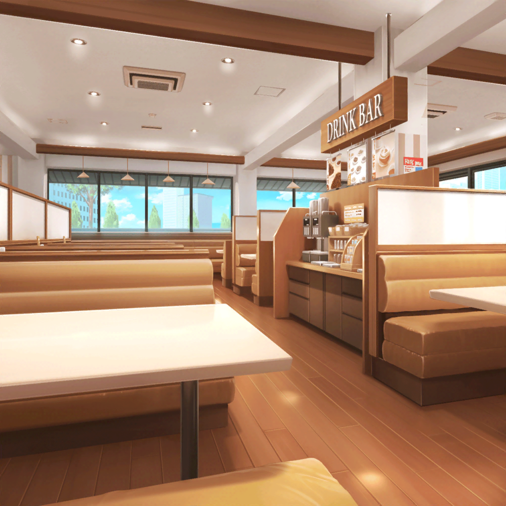

ファミリーレストラン
香澄
えー、お集まりのみなさん！ 本日はお日柄もよく……
有咲
そういうのいーから。
イベントの内容について話し合うんでしょ？
香澄
え、えへへ……
まずイベントの名前なんだけど『ガールズバンドパーティ』は
どうかな？
巴
へえ、パーティか……いいな！
紗夜
パーティには社交の集まりといった意味のほかに、
一行、集団といった意味もあるわ。そういった意味でも
パーティという言葉は最適かもしれないわね
美咲
なるほど。ダブルミーニングってやつか
香澄
そーなんです！ ダブルミーニング！
有咲
ぜってー偶然だろ
沙綾
と、とにかく！
みんな異議がないようだったらこの名前にしたいと思います。
どうかな？
一同
異議なし！
香澄
やったあ！ 決まりっ！
蘭
それで、肝心の内容はどうするの？
どんなパーティにするのか考えないと
こころ
やっぱり、世界中を笑顔にするパーティ！ これしかないわねっ！
イヴ
ブシドーパーティはどうですかっ？
例えばステージで藁を切ってみたり……
蘭
……ちょっと。これは音楽ライブパーティでしょ？
あたしは、他のバンドとセッションしてみたりしたい
友希那
それは賛成よ。ただ、セッションするからには私たちの
レベルまで演奏技術を引き上げてもらうわよ
蘭
だから、楽器のうまいへたっていうのは……！
日菜
あたしもおねーちゃんと一緒に演奏したいなあ♪
紗夜
……遠慮するわ。あなたはもっと、
Pastel＊Palettesのみなさんとの協調性をしっかり持ちなさい
薫
ミュージカル風に仕立てて、
次々にいろいろなバンドが演奏していくのはどうだろうか？
千聖
……それは、あなたしか楽しくないと思うわよ
ひまり
あちゃー……ちょっと予想してたけど、
案の定めちゃくちゃだね……
美咲
ま、こうなりますよねー……
蘭
あたしはバンドとバンドのつなぎめにセッションをいれて
音楽をつないでいくのがいいと思う
麻弥
それぞれのバンドの曲を１曲ずつカバーしあうのはどうですか？
彩
それもいいけど、
私たちやライブハウスのことを知ってもらえるように
MCはちゃんと入れたほうがいいと思う
友希那
音楽は何よりも雄弁よ。
MCは必要ない。私はやらないわ
千聖
私達アイドルバンドに、MCは必要不可欠なものだと
思っているわ。お客さんを盛り上げるために、
トークだって大切なバンドとしてのスキルよ
蘭
……別にあたしらはアイドルじゃないし
つぐみ
蘭ちゃん！ ちょっと落ち着いて……
香澄
うええっ、
こないだの打ち上げではあんなに楽しそうだったのに～！？
沙綾
それだけみんな、音楽のことになるとこだわりが強いんだね
はぐみ
ケンカはダメだよ～！ かーくん、どうしよう！？
香澄
み、みなさん落ち着いてくださいっ！
とりあえずMCの有無については……
蘭・友希那
なくていい
なくていいわね
彩・千聖
必要だよっ！
必要ね
こころ
MC？ おしゃべりのことかしらっ？
あたしは笑顔になるんならどっちでもいいわよ！
香澄
……あ、あはは～……それじゃ、
各バンドの曲をカバーするっていうのは……
一同
賛成！
反対！
有咲
おいおい……事態が悪化してんぞ！ どーすんだよ……
蘭
これ以上話してても意味ないね。
……みんな、行こう
友希那
同感よ
ひまり
ええっ、ちょ、ちょっと蘭！
リサ
友希那！
千聖
……私たちもこのあと、仕事があるからそろそろ失礼するわ
こころ
あらっ？ 今日の話し合いは終わりかしら？
それじゃあ、あたしたちも行きましょう！
りみ
えっ、ちょ、ちょっと……！
たえ
……行っちゃった
香澄
どうしよう～……困ったなあ……